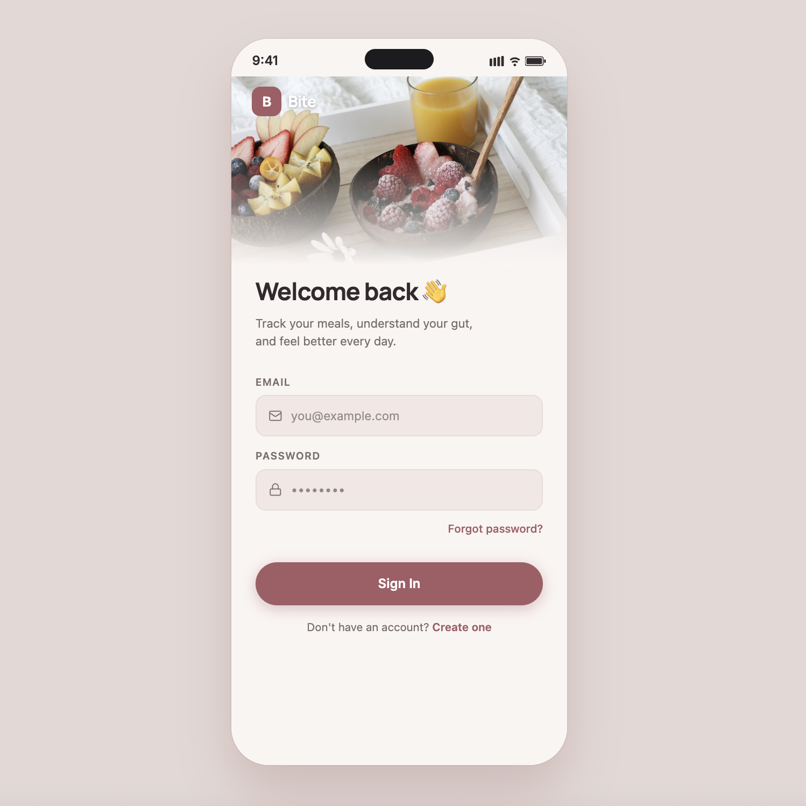
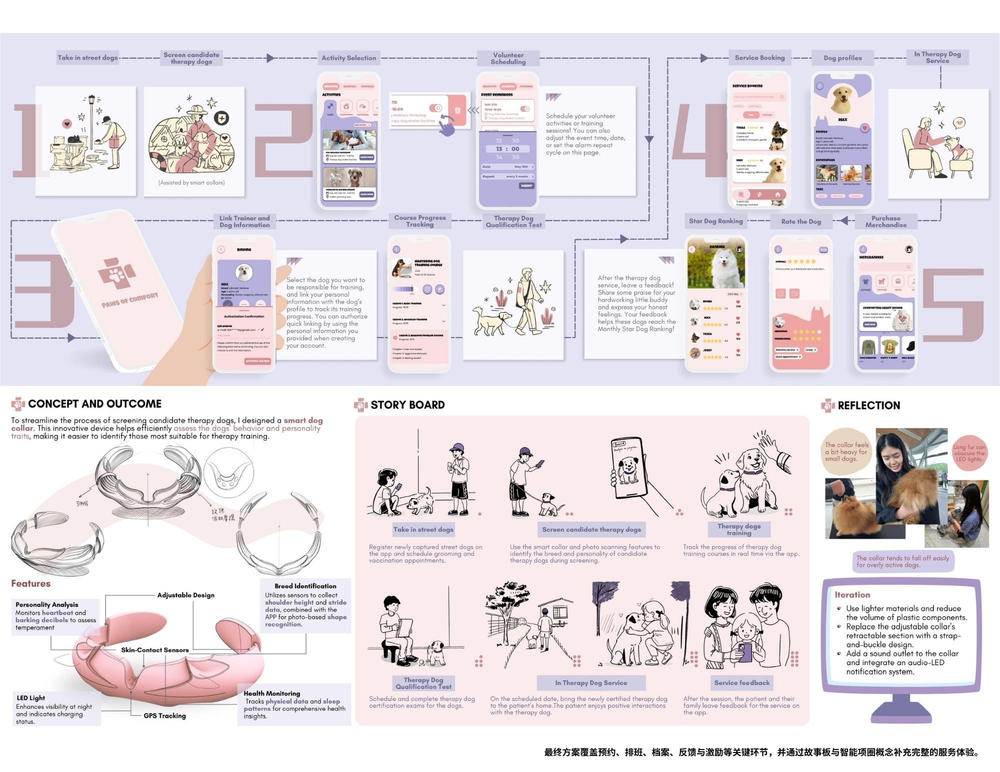

设计探索
与创作实践

UX 设计 · 高保真原型
Gut Feelings
面向 IBS 及消化敏感人群的饮食追踪 App。帮助用户记录日常饮食与肠道反应，通过数据洞察减少「今天吃什么」的反复试错压力。

交互设计 · APP 创新
Paws of Comfort
连接流浪犬救助、治疗犬训练与情绪支持服务的平台，附智能项圈概念设计用于辅助犬只性格评估。
你好，
我是周子禾
我是一名 UX 设计方向的研究生，就读于密歇根大学信息学院，本科毕业于昆山杜克大学媒体与艺术专业，并曾赴杜克大学交换。
我相信好的设计来自对真实处境的观察与共情。这里的作品涵盖 App、VR、桌游与游戏设定，每一个都从一个真实问题出发，落地为可感知的体验方案。
曾在上海英国商会担任信息与体验设计实习生，多次入选院长优秀学生名单（2023 · 2024 · 2025）。
Aug 2025 — now
密歇根大学
信息学硕士（UX 设计方向）
Aug–Dec 2023
杜克大学（交换）
媒体与艺术
Aug 2021 — May 2025
昆山杜克大学
媒体与艺术
院长优秀学生名单 · 2023 / 2024 / 2025
Figma
Photoshop
用户研究
Premiere Pro
交互设计
游戏 / 桌游设计
有想法？
一起聊聊。
欢迎合作 · 交流 · 任何想法
zihez@umich.edu